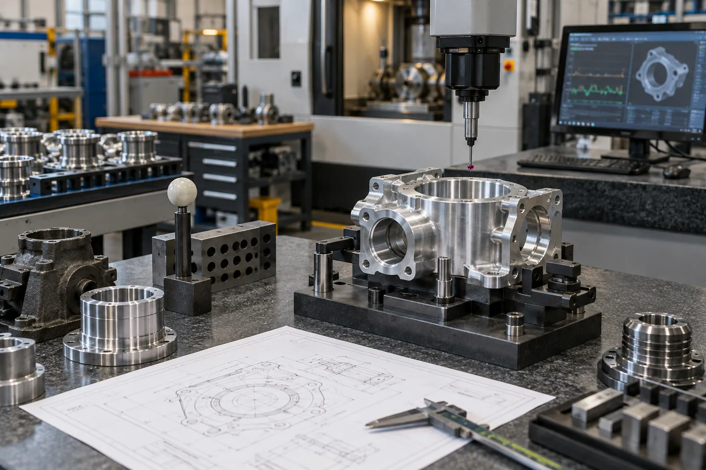

I
Identify
The valuable opportunities
ICE AI helps UK manufacturers identify high-value opportunities, create the solution and business case, and execute implementation—from first assessment to working system.
The valuable opportunities
The solution and business case
The implementation
The same operational problem can point to very different technologies. We start with the work, compare the viable routes and choose the one with the strongest fit.

You do not need to choose the technology first. We help you move from a real operating problem to a solution your team can own, built to work seamlessly with your architecture.
How we engageDefine the real constraint.
Select and prove the right approach.
Implement, embed and hand over.
Every engagement produces useful evidence and a clear choice: stop, prepare, prove or scale. Outcomes, responsibilities and success criteria are agreed before work begins.
Initial conversation · 30 minutes
Bring one production or business challenge. We will test whether AI is relevant, what a sensible next step looks like and whether ICE AI is the right fit.
Book the callFocused diagnostic · One working day
Review a small number of workflows and leave with a prioritised shortlist, a high-level value/risk view and a concise recommendation.
Recommended startDetailed design stage
Define the target workflow, data, controls, solution options, measurable business case and proof-of-concept plan.
Design sign-offEvidence-led delivery
Test against agreed evidence, then integrate, govern, train and hand over. Progress follows agreed success criteria from demonstration through user acceptance and go-live.
Accept · revise · stopEach stage reduces uncertainty and leaves you with something useful: a decision, a design, credible evidence or a working capability your team can own.
See how delivery is controlledFounder-led direction with specialist partners brought in when the work needs them. One accountable ICE AI lead remains responsible for the outcome.
Baseline, test set, failure cases and stop/scale thresholds are agreed before a proof is built.
Each stage names the outcome, evidence, owner and decision point so progress can be judged consistently.
Performance, monitoring, support and exception handling are designed before implementation.
Operating ownership, documentation, controls and training are part of the solution—not afterthoughts.
After go-live
Monitoring, evaluation and optimisation keep performance visible, catch drift and adapt the solution as processes, data and priorities change.
In 30 minutes, we will explore the workflow, whether AI is relevant and what the smallest sensible next step could be.